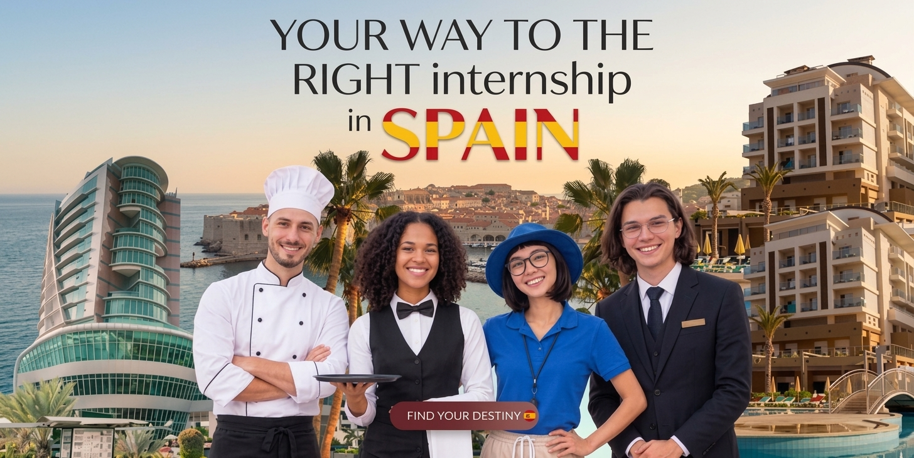
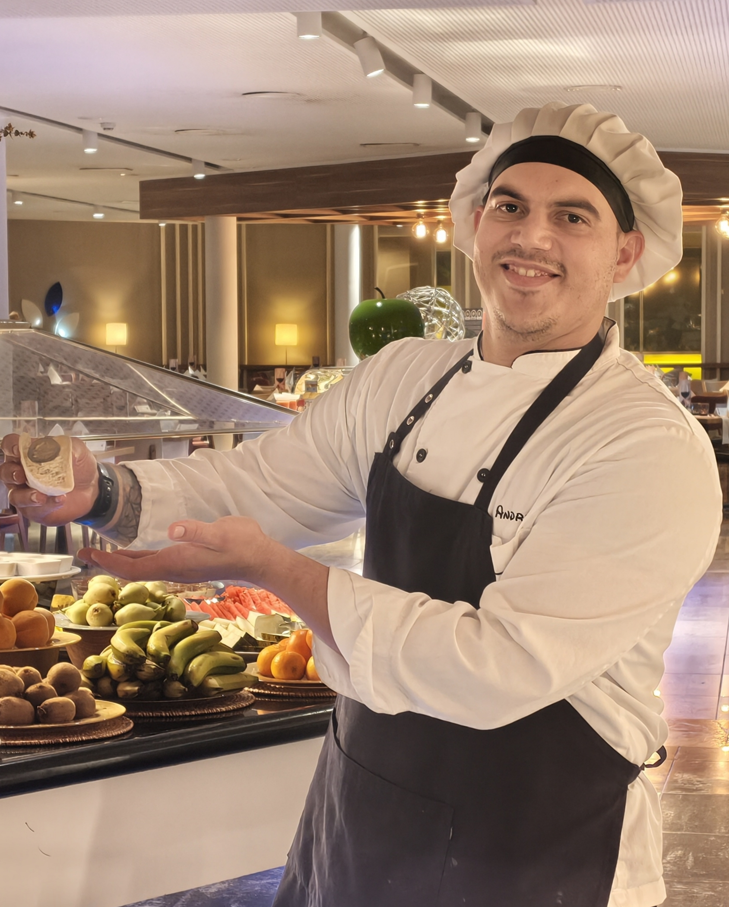

01 · La primera impresiónRecepciónConecta personas, espacios y experiencias
Talento europeo · experiencias que suman

Conócenos
MyInternWay es la plataforma que conecta a estudiantes de turismo y hostelería con hoteles, restaurantes y establecimientos en España que buscan pasantes con ganas de crecer. Te ayudamos con los trámites, resolvemos tus dudas y te acompañamos en todo el proceso.
No tienes que tenerlo todo claro para empezar. Solo necesitas un lugar donde sentirte acompañado.
El equipo MyInternWay ♥
Encuentra tu camino
Cada experiencia tiene su ritmo. Tú decides cuál encaja con tu próximo paso.


Historias que inspiran
La mejor forma de imaginarlo es escuchar a quienes ya lo están viviendo.
 Desde Francia · Barcelona01
Desde Francia · Barcelona01“Cada plato cuenta una historia: llegué para compartir mi cocina y descubrí que los sabores también tienen el poder de acercar a las personas.”
 Desde Francia · Valencia02
Desde Francia · Valencia02“Descubrí una forma de trabajar más abierta y me llevé aprendizajes que siguen conmigo.”
 Desde Alemania · Málaga03
Desde Alemania · Málaga03“Sentirme acompañada antes de venir marcó la diferencia. España fue el comienzo de mi siguiente etapa.”

Sin complicaciones
Comparte tus intereses, tu experiencia y qué te gustaría vivir.
Juntos vemos qué ciudad y qué oportunidad encajan contigo.
Antes, durante y después. Porque una buena experiencia se construye en equipo.
¿Listo para explorar?
Crea tu cuenta, cuéntanos quién eres y te avisaremos apenas confirmes tu correo.